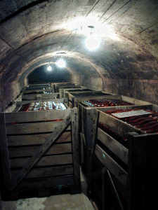
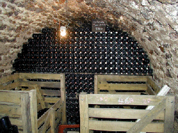
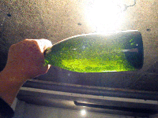
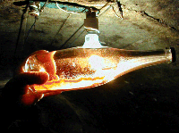
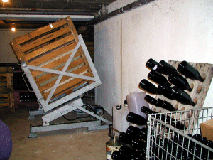
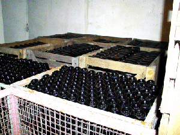

|
Une partie de la voute a été
bétonnée parce que le tuf n'est pas
solide.

Les bouteilles reposent sur lattes. On garde les
bouteille couchées pour permettre aux levures de
travailler sur une plus grande surface.
|
Cette voûte a été
bâtie, sans doute depuis très longtemps.

Les bouteilles capsulées vont rester en
cave au minimum un an, souvent beaucoup plus et là,
au calme sous une épaisse couche de tuf ou de craie,
il va "prendre mousse".
|
|
 Quand le vin est prêt il s'est
formé un dépôt qu'il faut
éliminer. Ici deux bouteilles chargées de
dépôt. Dans celle de champagne rosé
(obtenu par assemblage avec un peu de vin de Champagne
rouge) il est encore plus visible.

|

Autrefois les bouteilles étaient
tournée à la main, chaque jour et pendant des
semaines, sur un pupitre de bois, pour ramener le
dépôt près du bouchon afin de le
"dégorger". Maintenant un outil, le "giropalette"
traite toute une caisse de bouteilles en même temps.
|
|
Quand le dépot est descendu contre la
capsule le vin attend d'être dégorgé en
position verticale, sur pointe.

Quand, après congélation du goulot,
la bouteille est ouverte pour enlever le dépot, on
complète avec la liqueur d'expédition :
du vieux vin de Champagne plus ou moins sucré (au
sucre de raisin chez mon amie maître de chai qui
désire rester au plus près de la nature) pour
obtenir le brut, le sec ou le demi sec. Elle est alors
rebouchée avec un bouchon de liège solidement
maintenu par un muselet de fil de fer. La couleur du muselet
permet à l'éleveur de se retrouver facilement
dans ses stocks.
|
Au dernier moment, avant l'expédition,
cette bouteille sera "habillée" : étiquette,
collerette et feuille d'étain sur le bouchon.
Il ne restera plus qu'à le
déguster, frais mais pas glacé (8 à
10°), pour toute les grandes ou moins grandes occasions
!
 Utiliser de préférence des
flûtes lavées à l'eau chaude, sans
détergent, les bulles seront plus fines.
Utiliser de préférence des
flûtes lavées à l'eau chaude, sans
détergent, les bulles seront plus fines.

|